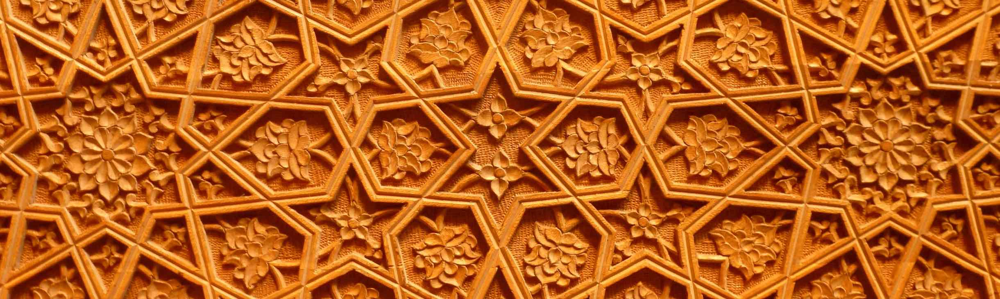
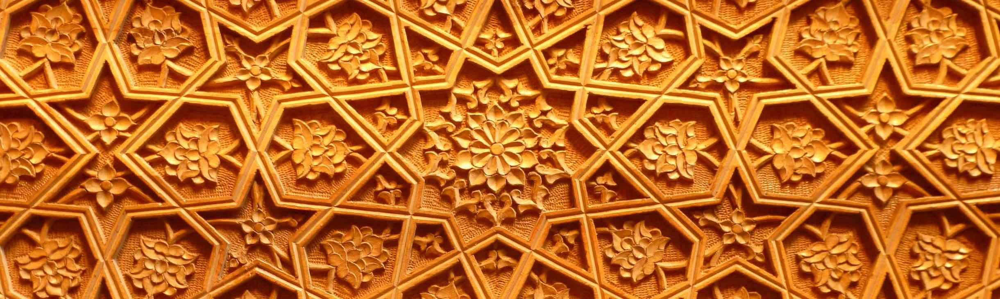

Main research interests Galaxy evolution. Dark matter haloes. Molecular gas observations. Star formation and its regulation. Research positions ■ Associate Professor at the Observatoire astronomique de Strasbourg, France 2021- ■ Post-doctoral researcher at the Observatoire astronomique de Strasbourg, France 2020-2021 ■ Post-doctoral researcher at the Hebrew University of Jerusalem and Tel Aviv University, Israel 2016 - 2020 ■ Research assistant at the Collège de France, Paris, France 2015 - 2016 ■ PhD student at the Observatoire de Paris and Université Pierrre et Marie Curie, Paris, France 2012 - 2015 Education ■ PhD degree from the Université Pierrre et Marie Curie, Paris, France, under the supervision of Françoise Combes. 2012 - 2015 ■ Master of research in Astronomy and Astrophysics (M2) at the Observatoire de Paris, France 2010-2011 ■ Bachelor’s Degree in Film and Cinema (L2) at the Université Paris III - Sorbonne Nouvelle 2009-2010 ■ Agrégation de Sciences Physiques (rank: 7th) 2008-2009 ■ Bachelor’s and Master’s degrees (L3 & M1) in fundamental physics at the Ecole Normale Supérieure (ENS), Paris 2006-2008 ■ Classes Préparatoires at the Lycée Louis-le-Grand, Paris 2004-2006 Awards ■ Arnold Rosenblum Prize, Racah Institute of Physics, Hebrew University of Jerusalem, Israel 2017 ■ Arskin Postdoctoral Fellowship, Hebrew University of Jerusalem, Israel 2016 ■ Raman-Charpak fellowship from the Indo-French Centre for the Promotion of Advanced Research (IFCPAR/CEFIPRA) 2013 Teaching ■ Advanced cosmology courses at the Hebrew University of Jerusalem. 2017 - ■ Teaching assistant at the Université Pierrre et Marie Curie, Paris. 2012 - 2015 ■ Teaching assistant at the lycées Louis-le-Grand and Saint Louis, Paris. 2009 - 2011 ■ Physics courses for beginners at the Ecole Normale Supérieure . 2008 - 2011 ■ School support in the Lycée Le Corbusier, Aubervilliers, France. 2006 - 2008 ■ Private tuitions for students in Mathematics, Physics and Chemistry. 2004 - 2015
For more informations, contact me at jonathan.freundlich at astro.unistra.fr